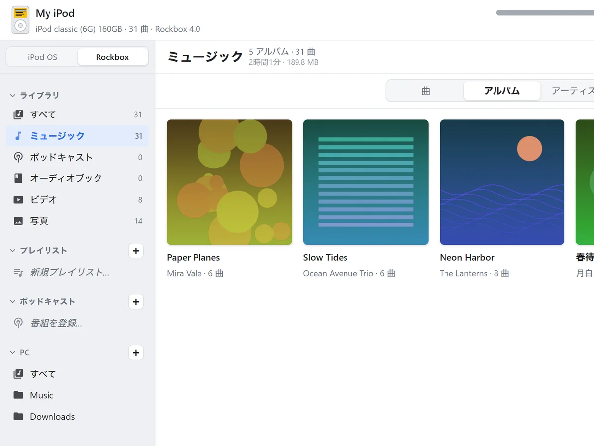
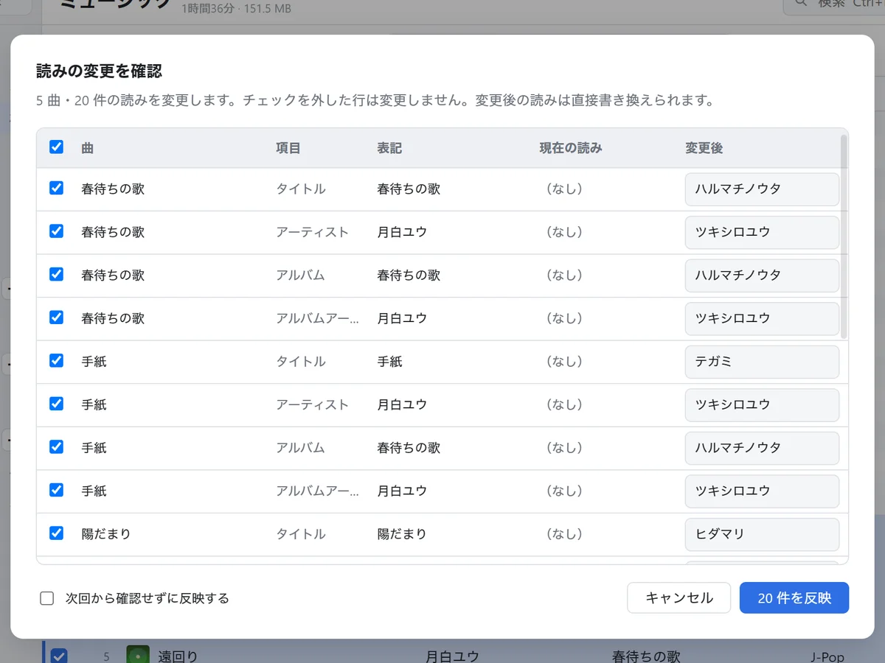
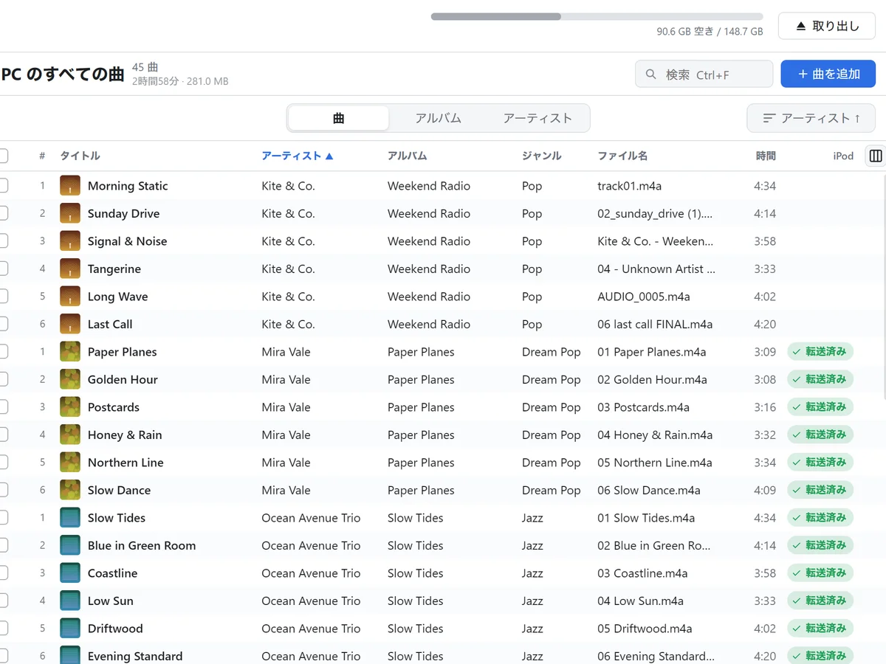
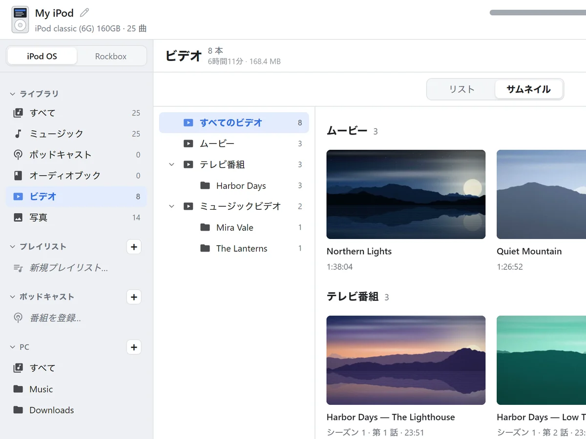
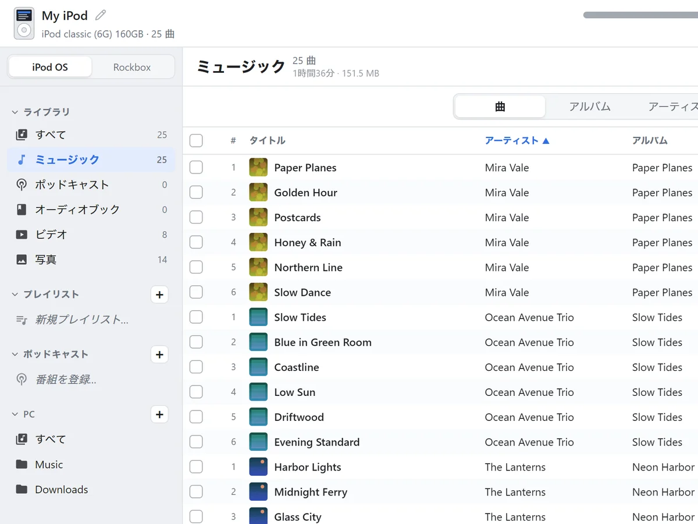

Rockbox のデータベースを PC で作る
曲を入れるたびに、Rockbox 4.0 と同じ形のデータベースを PC で作ります。iPod を取り出せば、すぐに「データベース」から曲を探せます。再生回数と評価は引き継ぎます。

iPod に曲を入れるのも、PC の音楽ファイルを整えるのも、同じ画面で。
曲を入れるたびに、Rockbox 4.0 と同じ形のデータベースを PC で作ります。iPod を取り出せば、すぐに「データベース」から曲を探せます。再生回数と評価は引き継ぎます。

転送するときに読みを自動で付けるので、iPod 本体の一覧で正しく並びます。辞書は内蔵で、ネットにはつながりません。
椎名林檎 → シイナリンゴ

PC の音楽フォルダを登録すると、iPod と同じ画面で整えられます。タグの編集、MusicBrainz からの曲情報の取得、ジャケットの検索、ファイル名の一括変更。iPod を持っていなくても使えます。

iPod OS では「ムービー」「テレビ番組」「写真」に、Rockbox では Videos と Pictures のフォルダに入れます。再生できない動画は変換します。

曲、アルバム、アーティストで切り替えて、再生、曲情報の編集、評価、プレイリストの作成と並べ替え、PC への書き出し。

曲やアルバムのフォルダをウィンドウに落とすだけ。プレイリストの上に落とせば、そのプレイリストにも入ります。
iPod OS では FLAC、Ogg、Opus などを自動で変換します（可逆は ALAC、非可逆は AAC 256 kbps）。Rockbox にはそのまま入れます。
曲に埋め込まれた画像、なければ同じフォルダの cover.jpg などを使います。
再生した位置を覚えるように入れます。フィードで番組を購読して、まだ聞いていない回を送ることもできます。
iTunes と同じように条件を組み合わせて作れます。iTunes の XML や .m3u8 から取り込めます。
新しい版が出ると、起動したときにお知らせします。ワンクリックで更新できます。
同じ操作でも、モードによって iPod への入れ方が変わります。Rockbox を入れた iPod なら、両方の曲を 1 台に入れて使い分けられます。
| iPod OS | Rockbox | |
|---|---|---|
| 曲の一覧 | Apple の曲の一覧（iTunesDB）に登録 | Rockbox 4.0 と同じ形のデータベースを PC で作成 |
| 曲の置き場所 | iPod の決まった場所 | Music/アーティスト/アルバム/01 曲名.flac（形は設定で変えられます） |
| FLAC・Ogg・Opus | ALAC か AAC に変換 | そのまま |
| ジャケット | iPod の画面に合う大きさで書き込み | アルバムのフォルダに cover.jpg |
| 歌詞 | 再生中の画面で読めるように | 曲と同じ名前の .lrc を一緒に |
| プレイリスト | iPod の「プレイリスト」に | Playlists/名前.m3u8 に |
| 機種 | iPod OS | Rockbox |
|---|---|---|
| iPod classic 6G / 6.5G / 7G（80、120、160 GB） | 対応 | 対応 |
| iPod video 5G / 5.5G | 対応 | 対応 |
| iPod nano 3G / 4G | 対応 | 非対応 |
| iPod photo、iPod nano 1G / 2G | 対応 | 対応 |
| iPod 1G〜4G（白黒液晶）、iPod mini | 曲のみアートワーク非対応の画面のため | 対応 |
| iPod nano 5G 以降、iPod touch | 読み取りのみ | 非対応 |
| iPod shuffle | 非対応 | 非対応 |
一度入れれば、新しい版はアプリが知らせます。
Windows 10 / 11（64 bit）
初めて開くと「Windows によって PC が保護されました」と出ます。「詳細情報」から「実行」を押してください。
Intel / Apple Silicon
macOS 15 以降は、一度開いて警告を閉じたあと、「システム設定」の「プライバシーとセキュリティ」で「このまま開く」を押してください。14 以前は Finder で右クリックして「開く」。
x86_64（試験的な提供）
AppImage は chmod +x で実行の許可を付けてから開いてください。
アプリにはまだコード署名をしていないため、初回だけ警告が出ます。これまでのリリース
ZenPod は個人で開発している無料のアプリです。広告も有料の機能もありません。気に入っていただけたら、Ko-fi で応援していただけるとうれしいです。開発を続ける励みになります。
表示されないときは Ko-fi のページから応援できます。
iPod OS モードで FLAC などを変換するときと、動画を変換するときに使います。MP3、AAC、ALAC、WAV、AIFF だけなら要りません。Rockbox モードの曲にも基本的には要りません。
Windows と macOS は、はじめの案内か設定の「変換 (ffmpeg)」からワンクリックで入れられます。macOS の FLAC は ffmpeg が無くても変換できます。Linux はディストリビューションのパッケージで入れてください。
使えます。iTunes で入れた曲もそのまま見えます。ただ、iTunes やミュージック.app の「自動同期」が有効だと、ZenPod で入れた曲が消されることがあります。iTunes 側は「手動で管理」にしてください。
iTunesDB.zenpod-backup に残します。これを iTunesDB に戻せば元どおりです。.rockbox/zenpod-db-backup/ に残します。本体の「データベース → 今すぐ更新」でも作り直せます。改善のため、1 日 1 回、匿名の利用状況（アプリの版、OS、iPod のモードと機種、曲数のおおまかな範囲など）を開発者が管理する日本のサーバーに送ります。曲名、ファイルの場所、iPod の名前やシリアル番号は送らず、IP アドレスも保存しません。設定の「このアプリについて」でいつでもオフにできます。一覧は README にあります。
GitHub の Issues にお寄せください。iPod の機種（画面の左上に出ます）、モード、OS を書いていただけると助かります。